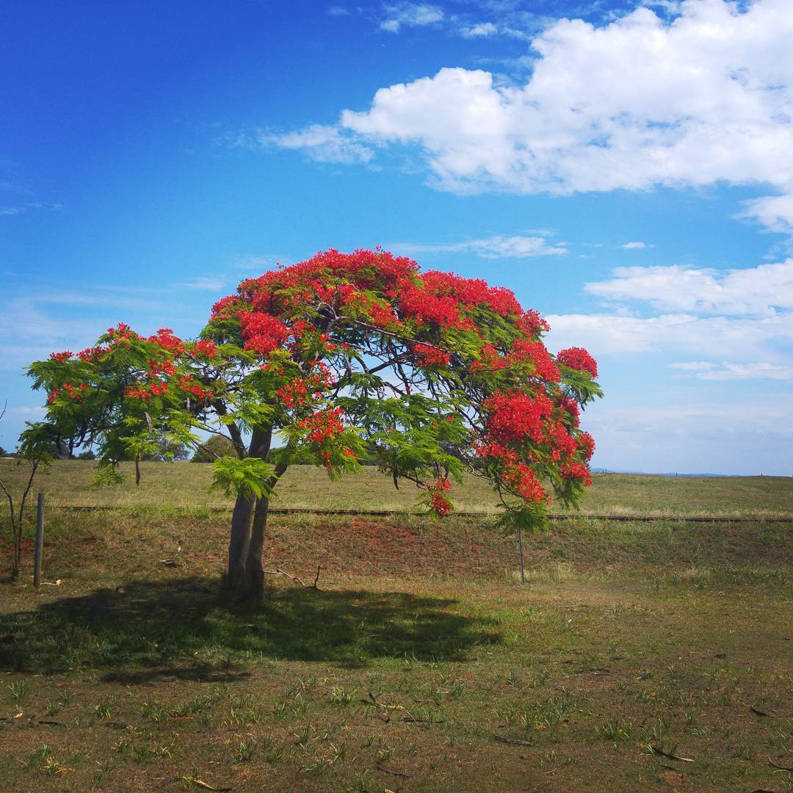
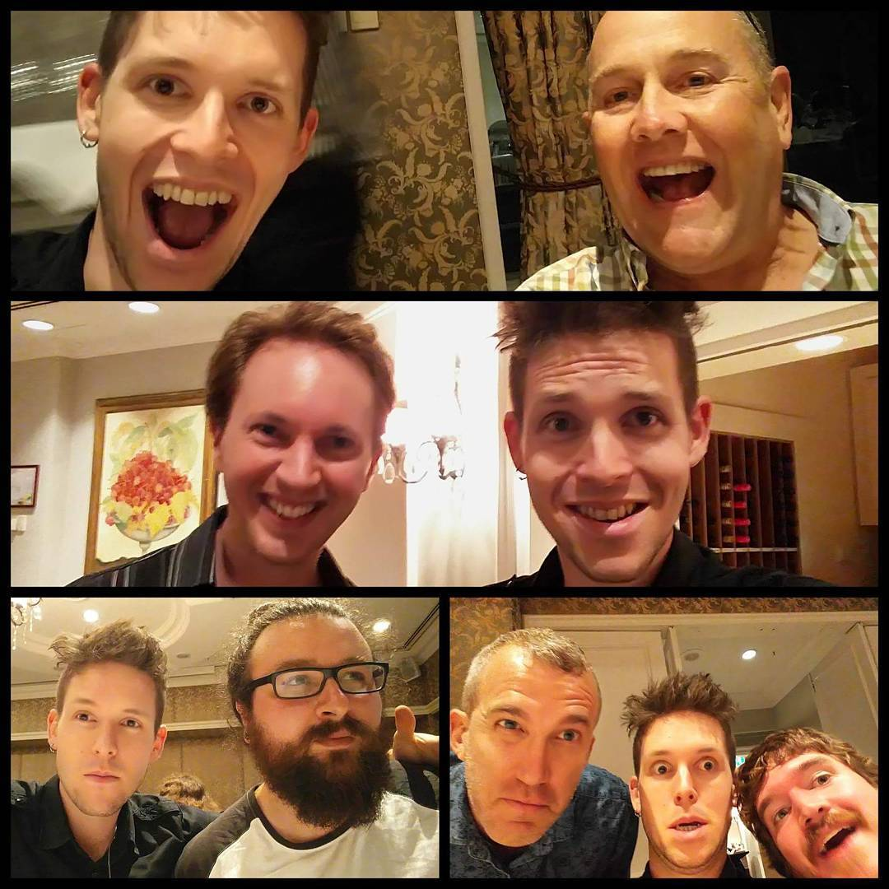

My first maths conference was The 36th Australasian Conference on Combinatorial Mathematics and Combinatorial Computing. I had just finished my honours thesis, Generalising the Clique-Coclique Bound, and I had travelled to Sydney to present my results to a room full of people much smarter than me.
I’m no longer working in graph theory or finite geometry, but every year since 2012 I have attended the ACCMCC. I keep up to date with the research, and I maintain contact with some of the best mathematicians I’ve ever met. So last week I flew to Brisbane for the 39th ACCMCC, held at the gorgeous University of Queensland campus in St. Lucia.
As always, the ACCMCC was an expertly run conference. I have to mention the public lecture by Jonathan Jedwab, What is a research mathematician?. The lecture was held on the 150th birthday of Hadamard, and Jedwab used Hadamard matrices to illustrate the development of mathematical theory. Jedwab is one of the best mathematics speakers I’ve ever seen, and certainly the best at communicating maths to a general audience.
In a first for me, I decided to attend the conference excursion. It was a boat trip to the St. Helena National Park, used as a prison in the 19th century. The place itself was beautiful, but unfortunately the tour didn’t include a walk around the island.

St. Helena Island National Park
The best part of the conference wasn’t the matroids, or even the “breakfast cheesecake” from the accommodation in which I was staying. You see, I got to spend the week with the mathematicians from my alma mater, The University of Western Australia. These people are passionate about mathematics, and it’s hard to be around them without feeling the same.

St. Helena Island National Park
I got to hang out with Mark (bottom-left), with whom I shared an office while I was studying my honours degree, and who this year won the well-deserved prize for the best student talk. I got to attend a plenary by Gordon Royle (top), who taught me linear algebra and had to always tell me to stop talking in his lectures. And I got to have morning coffee with John Bamberg (middle), my honours supervisor and one of the people who first inspired me to do maths.
As I’m preparing to write my thesis and transition out of academia, I know that my conference days are coming to a close. But if all goes well, I hope to squeeze just one last ACCMCC out of my time at university. Next year is the 40th ACCMCC, held in Newcastle, and I’ll do my very best to make it my fifth Australasian combinatorics conference in a row.
devtools::session_info()## ─ Session info ───────────────────────────────────────────────────────────────
## setting value
## version R version 4.1.0 (2021-05-18)
## os macOS Big Sur 11.3
## system aarch64, darwin20
## ui X11
## language (EN)
## collate en_AU.UTF-8
## ctype en_AU.UTF-8
## tz Australia/Melbourne
## date 2021-05-30
##
## ─ Packages ───────────────────────────────────────────────────────────────────
## package * version date lib source
## blogdown 1.3 2021-04-14 [1] CRAN (R 4.1.0)
## bookdown 0.22 2021-04-22 [1] CRAN (R 4.1.0)
## bslib 0.2.5.1 2021-05-18 [1] CRAN (R 4.1.0)
## cachem 1.0.4 2021-02-13 [1] CRAN (R 4.1.0)
## callr 3.7.0 2021-04-20 [1] CRAN (R 4.1.0)
## cli 2.5.0 2021-04-26 [1] CRAN (R 4.1.0)
## crayon 1.4.1 2021-02-08 [1] CRAN (R 4.1.0)
## desc 1.3.0 2021-03-05 [1] CRAN (R 4.1.0)
## devtools 2.4.0 2021-04-07 [1] CRAN (R 4.1.0)
## digest 0.6.27 2020-10-24 [1] CRAN (R 4.1.0)
## ellipsis 0.3.2 2021-04-29 [1] CRAN (R 4.1.0)
## evaluate 0.14 2019-05-28 [1] CRAN (R 4.1.0)
## fastmap 1.1.0 2021-01-25 [1] CRAN (R 4.1.0)
## fs 1.5.0 2020-07-31 [1] CRAN (R 4.1.0)
## glue 1.4.2 2020-08-27 [1] CRAN (R 4.1.0)
## htmltools 0.5.1.1 2021-01-22 [1] CRAN (R 4.1.0)
## jquerylib 0.1.4 2021-04-26 [1] CRAN (R 4.1.0)
## jsonlite 1.7.2 2020-12-09 [1] CRAN (R 4.1.0)
## knitr 1.33 2021-04-24 [1] CRAN (R 4.1.0)
## lifecycle 1.0.0 2021-02-15 [1] CRAN (R 4.1.0)
## magrittr 2.0.1 2020-11-17 [1] CRAN (R 4.1.0)
## memoise 2.0.0 2021-01-26 [1] CRAN (R 4.1.0)
## pkgbuild 1.2.0 2020-12-15 [1] CRAN (R 4.1.0)
## pkgload 1.2.1 2021-04-06 [1] CRAN (R 4.1.0)
## prettyunits 1.1.1 2020-01-24 [1] CRAN (R 4.1.0)
## processx 3.5.2 2021-04-30 [1] CRAN (R 4.1.0)
## ps 1.6.0 2021-02-28 [1] CRAN (R 4.1.0)
## purrr 0.3.4 2020-04-17 [1] CRAN (R 4.1.0)
## R6 2.5.0 2020-10-28 [1] CRAN (R 4.1.0)
## remotes 2.3.0 2021-04-01 [1] CRAN (R 4.1.0)
## rlang 0.4.11 2021-04-30 [1] CRAN (R 4.1.0)
## rmarkdown 2.8 2021-05-07 [1] CRAN (R 4.1.0)
## rprojroot 2.0.2 2020-11-15 [1] CRAN (R 4.1.0)
## sass 0.4.0 2021-05-12 [1] CRAN (R 4.1.0)
## sessioninfo 1.1.1 2018-11-05 [1] CRAN (R 4.1.0)
## stringi 1.6.1 2021-05-10 [1] CRAN (R 4.1.0)
## stringr 1.4.0 2019-02-10 [1] CRAN (R 4.1.0)
## testthat 3.0.2 2021-02-14 [1] CRAN (R 4.1.0)
## usethis 2.0.1 2021-02-10 [1] CRAN (R 4.1.0)
## withr 2.4.2 2021-04-18 [1] CRAN (R 4.1.0)
## xfun 0.22 2021-03-11 [1] CRAN (R 4.1.0)
## yaml 2.2.1 2020-02-01 [1] CRAN (R 4.1.0)
##
## [1] /Library/Frameworks/R.framework/Versions/4.1-arm64/Resources/library